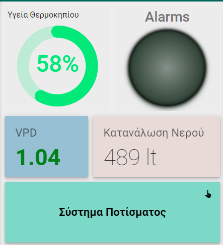
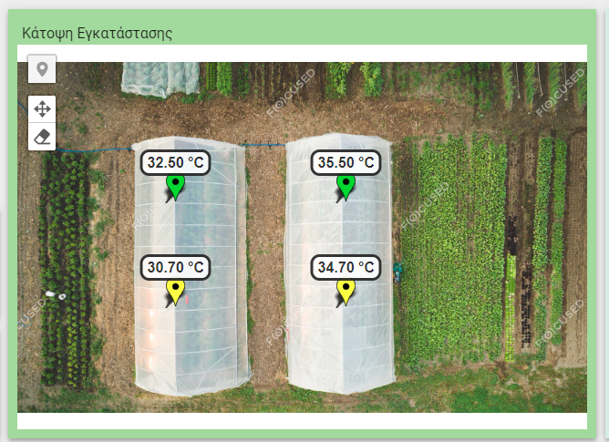
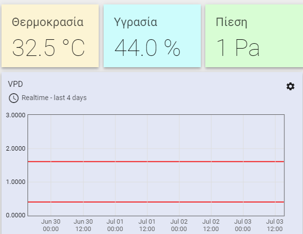
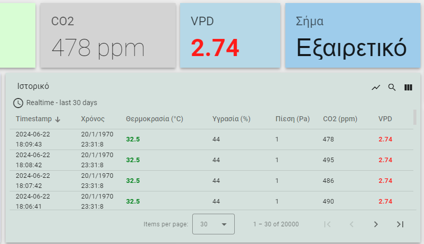
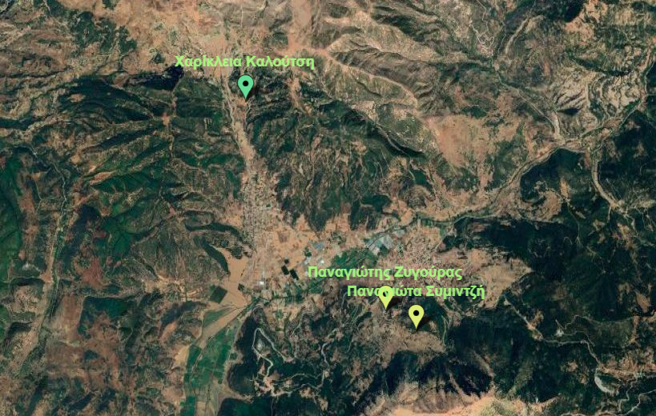
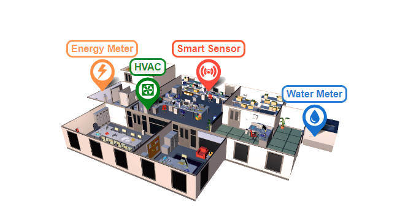
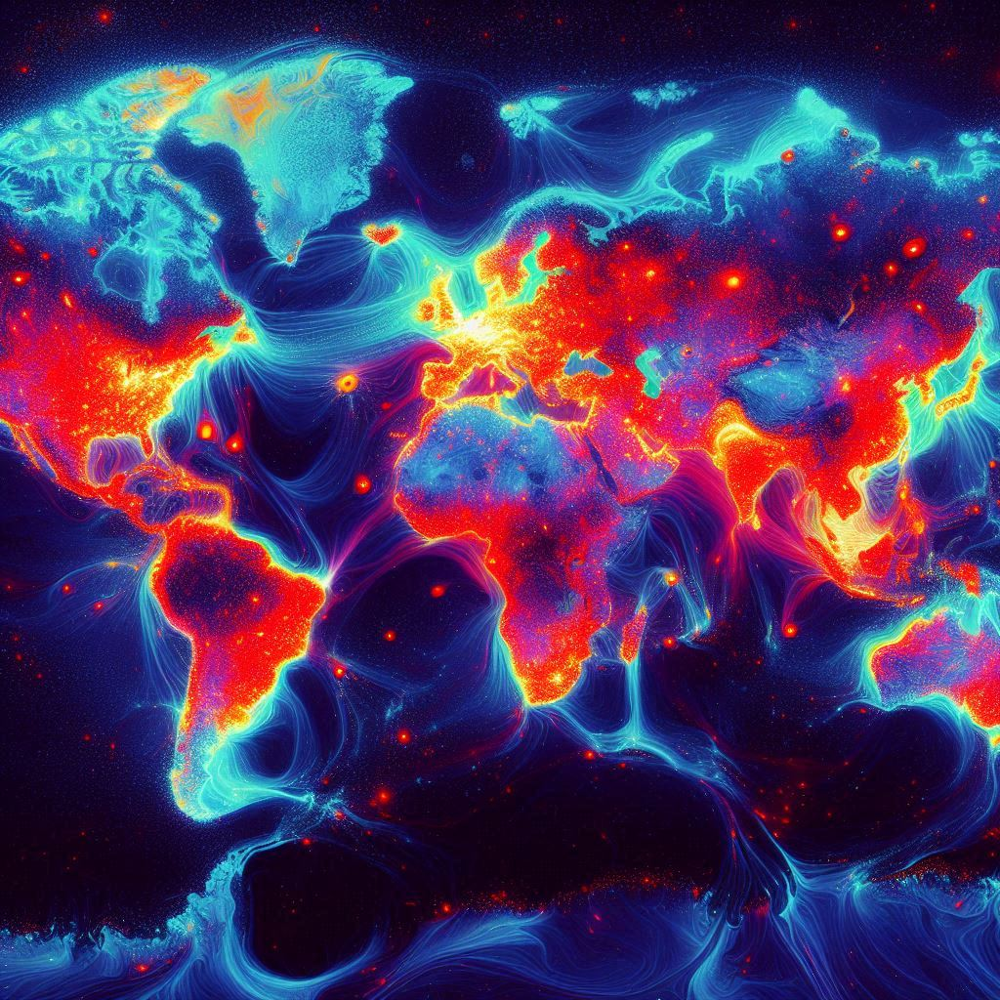

ThingsBoard Dashboards
IoT platform for data collection, processing, visualization and device management, using MQTT, CoAP and HTTP, with scalability, fault-tolerance and performance.
Client INDUST Systems, Greece

01Overview
About the project
IoT platform designed for data collection, processing, visualization, and device management. Use of industry-standard IoT protocols such as MQTT, CoAP, and HTTP. ThingsBoard provides scalability, fault-tolerance, and performance. Provision and manage devices, collect and visualize telemetry data, define data processing rules.
02Screenshots
Screenshots
Select an image to view it larger.
-

View larger01Greenhouse health, alarms, VPD, water consumption and irrigation system widgets -

View larger02Installation plan view with temperature markers -

View larger03Environmental readings and VPD trend -

View larger04Latest readings and telemetry history table -

View larger05Site locations on a satellite map -

View larger06Energy meter, HVAC, smart sensor and water meter overview


Keep exploring
More projects
-

-

Interested in something similar?
Tell me about your idea or project and let's see how we can build it together.